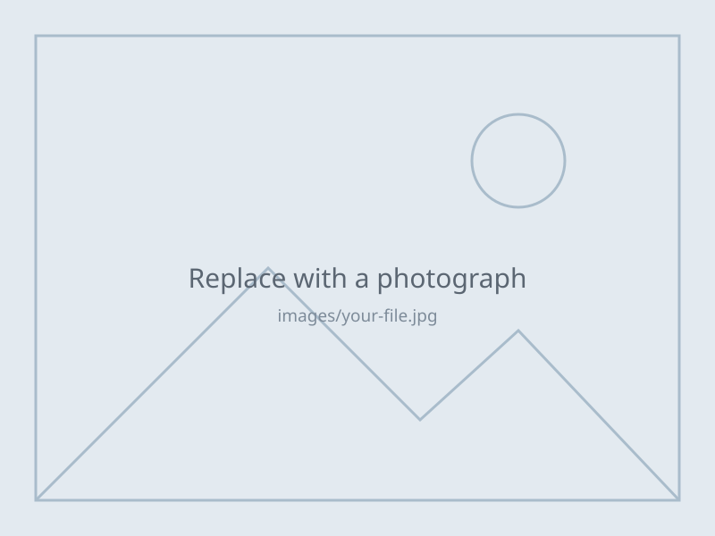

Archive
Photographs, documents, and secondary footage collected alongside the interviews — family albums, immigration papers, newspaper clippings, and archival film.
Photographs

Secondary footage
Documents & further reading
-
Document or article title
EXAMPLE — replace. One line on what it is and how it relates to the project.
-
Document or article title
EXAMPLE — replace.
-
Document or article title
EXAMPLE — replace.
Rights and permissions
Materials here are shared with the permission of the families and institutions that hold them. If you believe something has been posted in error, or you would like to request use of an item, please contact the project.